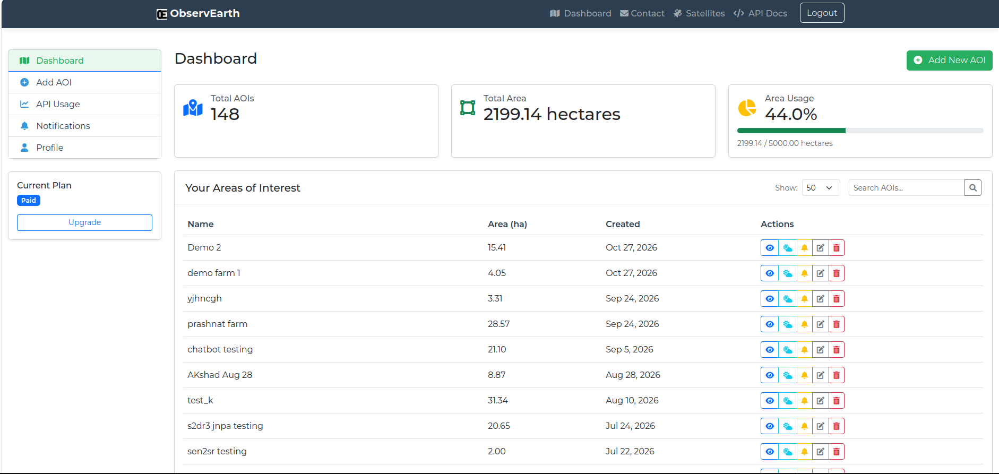

Platform Walkthrough: Dashboard Overview¶
The Main Dashboard (/dashboard/) serves as your operational command center on ObservEarth. It provides a real-time summary of your monitored land footprint, quota consumption, and saved farm boundaries.
Dashboard Command Center¶

1. Top Telemetry Cards¶
- Total AOIs: Real-time counter of all registered parcels (e.g.,
148active fields). - Total Area: Cumulative geographic land area monitored by ObservEarth (e.g.,
2199.14 hectares). - Area Usage Gauge: Real-time capacity progress bar showing consumed hectares against your monthly subscription tier allowance (e.g.,
44.0%utilized of5000.00 hectares).
2. Monitored Areas of Interest (AOI) Inventory¶
The AOI table lists every parcel saved under your account:
- Search AOIs: Type any farm name or coordinate keyword into the search bar to filter records instantly.
- Page Size Selector: Switch between
10,20,50, or100records per view. - Field Name & Calculated Area: Displays each parcel's custom label and geodesic surface area in hectares (e.g.,
15.41 ha,4.05 ha,28.57 ha).
3. Quick Action Controls¶
Each row in the inventory table provides one-click operational shortcuts:
- View Details (Blue Eye Icon): Opens the Satellite Explorer & Analytics page (
/dashboard/aoi/<id>/) to inspect spectral indices, cloud cover filters, and date ribbons. - Weather (Blue Sun Icon): Opens the dedicated Agrometeorological Weather Station (
/dashboard/aoi/<id>/weather/) for live sensor telemetry and 7-day agronomic forecasts. - Notifications (Yellow Bell Icon): Opens the field's Automated Threshold Alerts monitoring rules.
- Edit (Pencil Icon): Update the parcel boundary, name, or metadata.
- Delete (Red Trash Icon): Permanently deletes the field and immediately releases hectares back to your account quota.